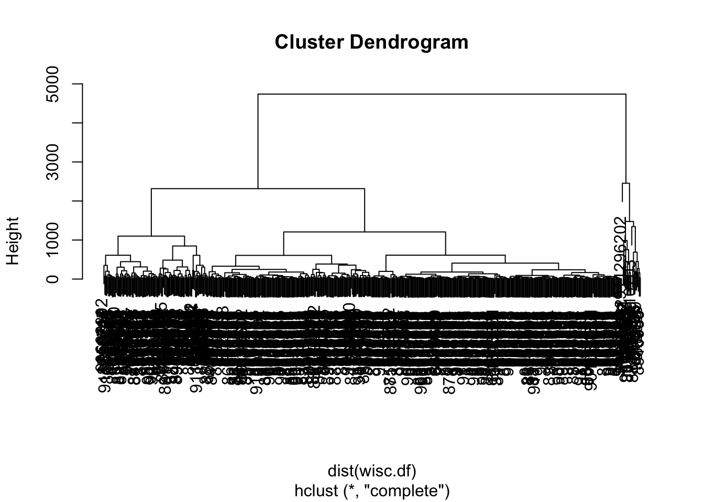
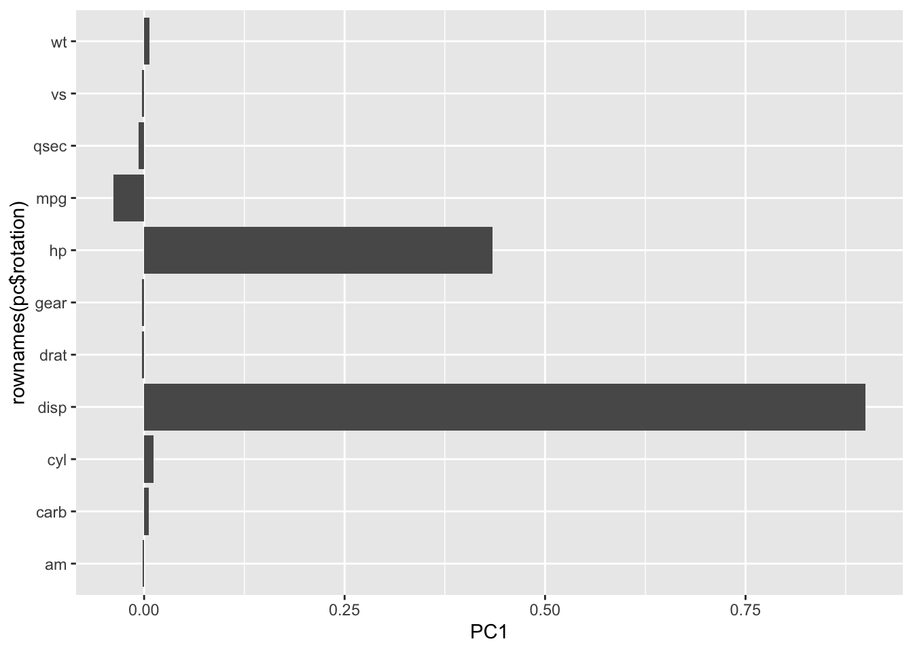
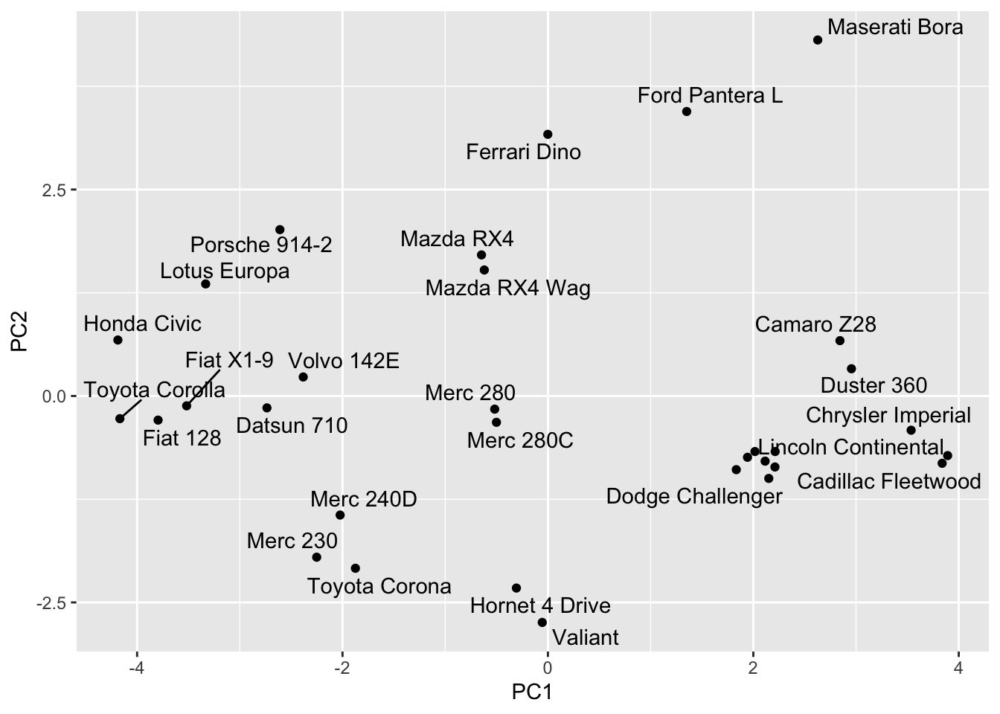
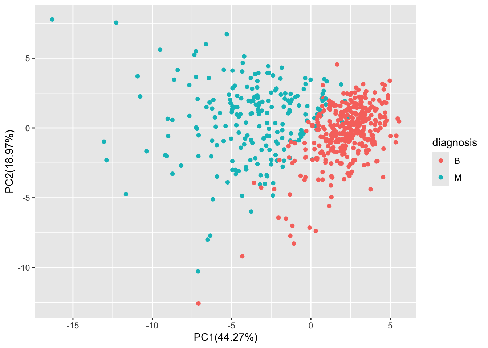
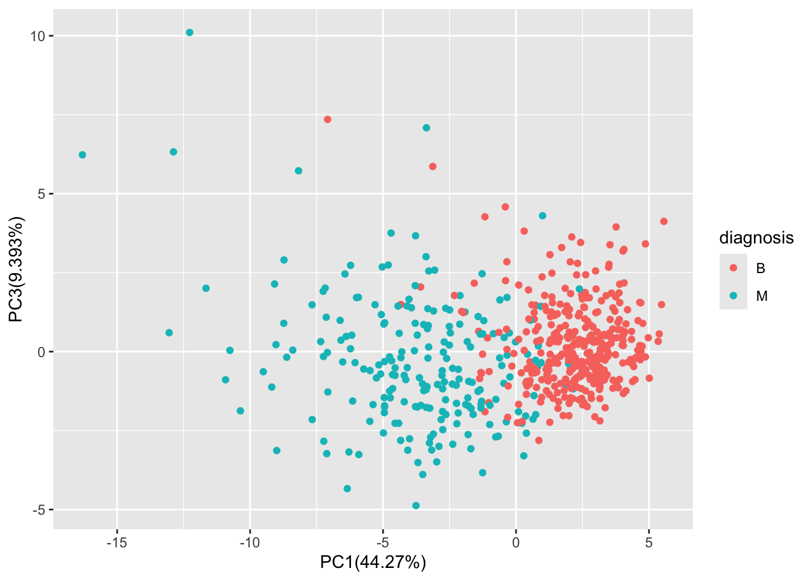
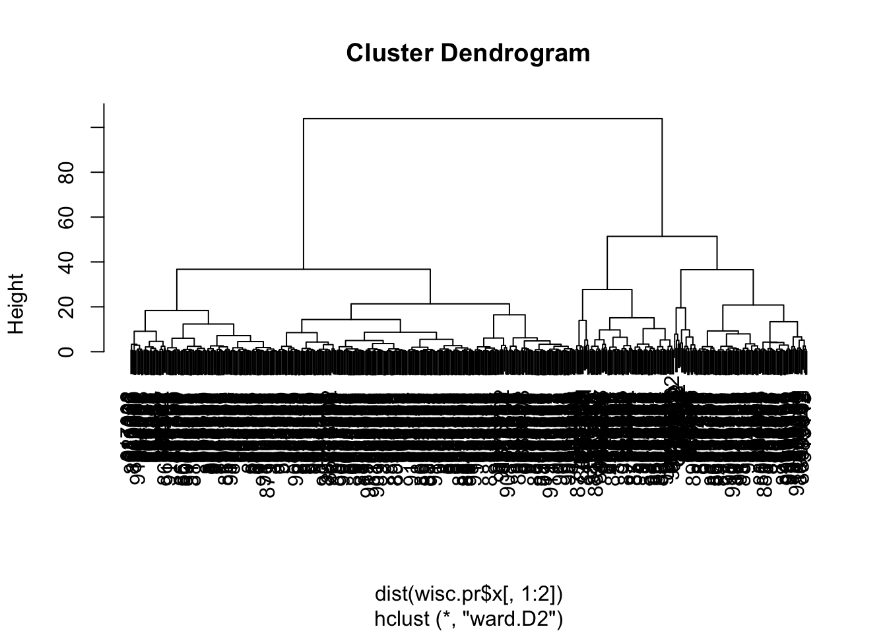
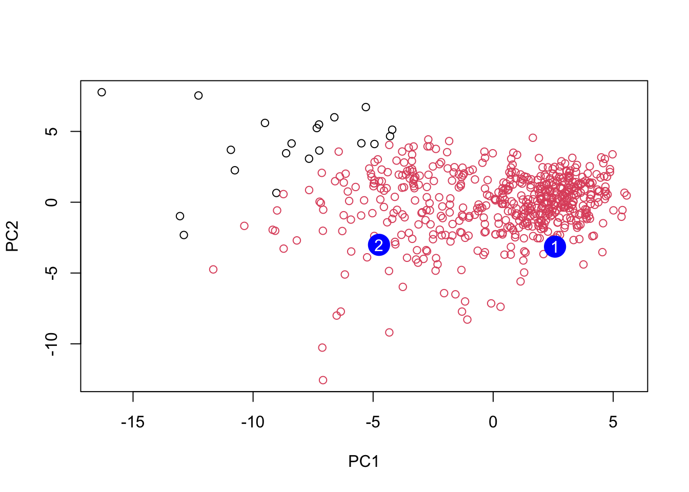

# Save your input data file into your Project directory
fna.data <- "WisconsinCancer.csv"
# Complete the following code to input the data and store as wisc.df
wisc.df <- read.csv(fna.data, row.names=1)Class 8 Mini-Project
Background
This mini-project explores a complete analysis using the unsupervised learning techniques covered in class. You’ll extend what you’ve learned by combining PCA as a preprocessing step to clustering using data that consist of measurements of cell nuclei of human breast masses. This expands on our RNA-Seq analysis from last day.
Data Import
Our data come from the U. of Wisconsin Medical Center
Q1. How many patients/datapoints are in this dataset?
nrow(wisc.df)[1] 569Q2. How many of the observation have a malignant diagnosis?
sum(wisc.df$diagnosis == "M")[1] 212Q3. How many variables/features in the data are sufficed with “_mean”?
colnames(wisc.df) [1] "diagnosis" "radius_mean"
[3] "texture_mean" "perimeter_mean"
[5] "area_mean" "smoothness_mean"
[7] "compactness_mean" "concavity_mean"
[9] "concave.points_mean" "symmetry_mean"
[11] "fractal_dimension_mean" "radius_se"
[13] "texture_se" "perimeter_se"
[15] "area_se" "smoothness_se"
[17] "compactness_se" "concavity_se"
[19] "concave.points_se" "symmetry_se"
[21] "fractal_dimension_se" "radius_worst"
[23] "texture_worst" "perimeter_worst"
[25] "area_worst" "smoothness_worst"
[27] "compactness_worst" "concavity_worst"
[29] "concave.points_worst" "symmetry_worst"
[31] "fractal_dimension_worst"length(grep("_mean", colnames(wisc.df)))[1] 10There is a diagnosis column that is the clinican consenus that I wnat to exclude from any further analysis. We will come back later and compare our results to this diasgnosis.
diagnosis <- as.factor(wisc.df$diagnosis)
diagnosis [1] M M M M M M M M M M M M M M M M M M M B B B M M M M M M M M M M M M M M M
[38] B M M M M M M M M B M B B B B B M M B M M B B B B M B M M B B B B M B M M
[75] B M B M M B B B M M B M M M B B B M B B M M B B B M M B B B B M B B M B B
[112] B B B B B B M M M B M M B B B M M B M B M M B M M B B M B B M B B B B M B
[149] B B B B B B B B M B B B B M M B M B B M M B B M M B B B B M B B M M M B M
[186] B M B B B M B B M M B M M M M B M M M B M B M B B M B M M M M B B M M B B
[223] B M B B B B B M M B B M B B M M B M B B B B M B B B B B M B M M M M M M M
[260] M M M M M M M B B B B B B M B M B B M B B M B M M B B B B B B B B B B B B
[297] B M B B M B M B B B B B B B B B B B B B B M B B B M B M B B B B M M M B B
[334] B B M B M B M B B B M B B B B B B B M M M B B B B B B B B B B B M M B M M
[371] M B M M B B B B B M B B B B B M B B B M B B M M B B B B B B M B B B B B B
[408] B M B B B B B M B B M B B B B B B B B B B B B M B M M B M B B B B B M B B
[445] M B M B B M B M B B B B B B B B M M B B B B B B M B B B B B B B B B B M B
[482] B B B B B B M B M B B M B B B B B M M B M B M B B B B B M B B M B M B M M
[519] B B B M B B B B B B B B B B B M B M M B B B B B B B B B B B B B B B B B B
[556] B B B B B B B M M M M M M B
Levels: B MNow we can remove it from the wisc.df
wisc.df <- wisc.df[,-1]wisc.df[1, 1][1] 17.99Clustering
Let’s try a hclust()
hc <- hclust(dist(wisc.df))
plot(hc)
We can extract clusters from this rather poor dendrogram/tree with the cutree()
grps <- cutree(hc, k=2)table(diagnosis)diagnosis
B M
357 212 We can generate a cross-table compares our cluster grps vector with our diagnosis vector values
table(diagnosis, grps) grps
diagnosis 1 2
B 357 0
M 192 20Principal Component Analysis
The importance of data scaling
The main function for PCA in base R is prcomp() it has a default input parameter of scale=False.
#prcomp()
head(mtcars) mpg cyl disp hp drat wt qsec vs am gear carb
Mazda RX4 21.0 6 160 110 3.90 2.620 16.46 0 1 4 4
Mazda RX4 Wag 21.0 6 160 110 3.90 2.875 17.02 0 1 4 4
Datsun 710 22.8 4 108 93 3.85 2.320 18.61 1 1 4 1
Hornet 4 Drive 21.4 6 258 110 3.08 3.215 19.44 1 0 3 1
Hornet Sportabout 18.7 8 360 175 3.15 3.440 17.02 0 0 3 2
Valiant 18.1 6 225 105 2.76 3.460 20.22 1 0 3 1we could do a PCA of this data, could be misleading
pc <- prcomp(mtcars)
biplot(pc)
Let’s look at the mean values of each column and their standard deviation.
colMeans(mtcars) mpg cyl disp hp drat wt qsec
20.090625 6.187500 230.721875 146.687500 3.596563 3.217250 17.848750
vs am gear carb
0.437500 0.406250 3.687500 2.812500 apply(mtcars, 2, sd) mpg cyl disp hp drat wt
6.0269481 1.7859216 123.9386938 68.5628685 0.5346787 0.9784574
qsec vs am gear carb
1.7869432 0.5040161 0.4989909 0.7378041 1.6152000 We can “scale” this data before PCA to gwet a much better representation and analysis of all the columns.
mtscale <- scale(mtcars)colMeans(mtscale) mpg cyl disp hp drat
6.678685e-16 -6.938894e-18 -2.949030e-16 -2.428613e-17 -1.113692e-15
wt qsec vs am gear
5.221518e-16 -1.465841e-15 1.387779e-17 8.326673e-17 -5.030698e-17
carb
1.387779e-17 apply(mtscale, 2, sd) mpg cyl disp hp drat wt qsec vs am gear carb
1 1 1 1 1 1 1 1 1 1 1 pc.scale <- prcomp(mtscale)We can look at the two main result figures from PCA - the “PC plot” (a.k.a score plot, ordienation plot, or PC1 vs PC2 plot). The “loadings plot” how the original variables contribute to the new PCs.
pc.scaleStandard deviations (1, .., p=11):
[1] 2.5706809 1.6280258 0.7919579 0.5192277 0.4727061 0.4599958 0.3677798
[8] 0.3505730 0.2775728 0.2281128 0.1484736
Rotation (n x k) = (11 x 11):
PC1 PC2 PC3 PC4 PC5 PC6
mpg -0.3625305 0.01612440 -0.22574419 -0.022540255 -0.10284468 -0.10879743
cyl 0.3739160 0.04374371 -0.17531118 -0.002591838 -0.05848381 0.16855369
disp 0.3681852 -0.04932413 -0.06148414 0.256607885 -0.39399530 -0.33616451
hp 0.3300569 0.24878402 0.14001476 -0.067676157 -0.54004744 0.07143563
drat -0.2941514 0.27469408 0.16118879 0.854828743 -0.07732727 0.24449705
wt 0.3461033 -0.14303825 0.34181851 0.245899314 0.07502912 -0.46493964
qsec -0.2004563 -0.46337482 0.40316904 0.068076532 0.16466591 -0.33048032
vs -0.3065113 -0.23164699 0.42881517 -0.214848616 -0.59953955 0.19401702
am -0.2349429 0.42941765 -0.20576657 -0.030462908 -0.08978128 -0.57081745
gear -0.2069162 0.46234863 0.28977993 -0.264690521 -0.04832960 -0.24356284
carb 0.2140177 0.41357106 0.52854459 -0.126789179 0.36131875 0.18352168
PC7 PC8 PC9 PC10 PC11
mpg 0.367723810 0.754091423 -0.235701617 -0.13928524 -0.124895628
cyl 0.057277736 0.230824925 -0.054035270 0.84641949 -0.140695441
disp 0.214303077 -0.001142134 -0.198427848 -0.04937979 0.660606481
hp -0.001495989 0.222358441 0.575830072 -0.24782351 -0.256492062
drat 0.021119857 -0.032193501 0.046901228 0.10149369 -0.039530246
wt -0.020668302 0.008571929 -0.359498251 -0.09439426 -0.567448697
qsec 0.050010522 0.231840021 0.528377185 0.27067295 0.181361780
vs -0.265780836 -0.025935128 -0.358582624 0.15903909 0.008414634
am -0.587305101 0.059746952 0.047403982 0.17778541 0.029823537
gear 0.605097617 -0.336150240 0.001735039 0.21382515 -0.053507085
carb -0.174603192 0.395629107 -0.170640677 -0.07225950 0.319594676A loading
library(ggplot2)
ggplot(pc$rotation) +
aes(PC1, rownames(pc$rotation)) +
geom_col()
library(ggplot2)
ggplot(pc.scale$rotation) +
aes(PC1, rownames(pc.scale$rotation)) +
geom_col()
PC plot of scaled PCA results
library(ggrepel)
ggplot(pc.scale$x) +
aes(PC1, PC2, label=rownames(pc.scale$x)) +
geom_point() +
geom_text_repel()Warning: ggrepel: 6 unlabeled data points (too many overlaps). Consider
increasing max.overlaps
Key point: In general we will set
scale=TRUEwhen we do PCA. This is not the default but probably should be…
We can check the SD and mean of the differnt columns in wisc.data to see if we need to scale - hint: we do!
PCA of wisc.data
wisc.pr <- prcomp(wisc.df, scale=TRUE)summary(wisc.pr)Importance of components:
PC1 PC2 PC3 PC4 PC5 PC6 PC7
Standard deviation 3.6444 2.3857 1.67867 1.40735 1.28403 1.09880 0.82172
Proportion of Variance 0.4427 0.1897 0.09393 0.06602 0.05496 0.04025 0.02251
Cumulative Proportion 0.4427 0.6324 0.72636 0.79239 0.84734 0.88759 0.91010
PC8 PC9 PC10 PC11 PC12 PC13 PC14
Standard deviation 0.69037 0.6457 0.59219 0.5421 0.51104 0.49128 0.39624
Proportion of Variance 0.01589 0.0139 0.01169 0.0098 0.00871 0.00805 0.00523
Cumulative Proportion 0.92598 0.9399 0.95157 0.9614 0.97007 0.97812 0.98335
PC15 PC16 PC17 PC18 PC19 PC20 PC21
Standard deviation 0.30681 0.28260 0.24372 0.22939 0.22244 0.17652 0.1731
Proportion of Variance 0.00314 0.00266 0.00198 0.00175 0.00165 0.00104 0.0010
Cumulative Proportion 0.98649 0.98915 0.99113 0.99288 0.99453 0.99557 0.9966
PC22 PC23 PC24 PC25 PC26 PC27 PC28
Standard deviation 0.16565 0.15602 0.1344 0.12442 0.09043 0.08307 0.03987
Proportion of Variance 0.00091 0.00081 0.0006 0.00052 0.00027 0.00023 0.00005
Cumulative Proportion 0.99749 0.99830 0.9989 0.99942 0.99969 0.99992 0.99997
PC29 PC30
Standard deviation 0.02736 0.01153
Proportion of Variance 0.00002 0.00000
Cumulative Proportion 1.00000 1.00000Let’s make the main PC1 vs PC2
ggplot(wisc.pr$x) +
aes(PC1, PC2, col=diagnosis) +
geom_point() +
xlab("PC1(44.27%)") +
ylab("PC2(18.97%)")
Q4. From your results, what proportion of the original variance is captured by the first principal components (PC1)? 44.27%
Q5. How many principal components (PCs) are required to describe at least 70% of the original variance in the data? 3
Q6. How many principal components (PCs) are required to describe at least 90% of the original variance in the data? 7
Q7. What stands out to you about this plot? Is it easy or difficult to understand? Why?
biplot(wisc.pr)
The graph capture the same information as the ggplot for PC1 and PC2. There are two noticeable cluster label in red and black
Q8. Generate a similar plot for principal components 1 and 3. What do you notice about these plots?
ggplot(wisc.pr$x) +
aes(PC1, PC3, col=diagnosis) +
geom_point() +
xlab("PC1(44.27%)") +
ylab("PC3(9.393%)")
There is a red dots cluster on the right and blue dots cluster on the left. PC1 axis 0 value seem to separate the two cluster.
Q9. For the first principal component, what is the component of the loading vector (i.e. wisc.pr$rotation[,1]) for the feature concave.points_mean?
wisc.pr$rotation["concave.points_mean", 1][1] -0.2608538Q10. What is the minimum number of principal components required to explain 80% of the variance of the data?
PC5 Explains 84.734% of variance
5. Combining Methods
We can take our PCA results and use them as a basis set for other analysis such as clustering
Clustering on PCA results
wisc.pr.hclust <- hclust(dist(wisc.pr$x[,1:2]), method="ward.D2")
plot(wisc.pr.hclust)
We can “cut” this tree to yield our clusters (groups):
pc.grps <- cutree(wisc.pr.hclust, k = 2)
table(pc.grps)pc.grps
1 2
195 374 How do my cluster grps compare to the expert diagnosis?
table(diagnosis, pc.grps) pc.grps
diagnosis 1 2
B 18 339
M 177 35Q15. How well does the newly created model with four clusters separate out the two diagnoses? Better, but there are still misclassified points. Group 1 has 18 B, group 2 has 35 M that are misclassifed.
Q16. How well do the hierarchical clustering models you created in previous sections (i.e. before PCA) do in terms of separating the diagnoses? Again, use the table() function to compare the output of each model (wisc.km$cluster and wisc.hclust.clusters) with the vector containing the actual diagnoses.
They did really badly before PCA. We did much better after PCA - the new PCA variables (what we called a basis set) give us much better seperation of M and B.
7. Prediction
We can use our PCA model for the analysis of the new “unseen” data. In this case from U. Mich.
url <- "https://tinyurl.com/new-samples-CSV"
new <- read.csv(url)
npc <- predict(wisc.pr, newdata=new)
npc PC1 PC2 PC3 PC4 PC5 PC6 PC7
[1,] 2.576616 -3.135913 1.3990492 -0.7631950 2.781648 -0.8150185 -0.3959098
[2,] -4.754928 -3.009033 -0.1660946 -0.6052952 -1.140698 -1.2189945 0.8193031
PC8 PC9 PC10 PC11 PC12 PC13 PC14
[1,] -0.2307350 0.1029569 -0.9272861 0.3411457 0.375921 0.1610764 1.187882
[2,] -0.3307423 0.5281896 -0.4855301 0.7173233 -1.185917 0.5893856 0.303029
PC15 PC16 PC17 PC18 PC19 PC20
[1,] 0.3216974 -0.1743616 -0.07875393 -0.11207028 -0.08802955 -0.2495216
[2,] 0.1299153 0.1448061 -0.40509706 0.06565549 0.25591230 -0.4289500
PC21 PC22 PC23 PC24 PC25 PC26
[1,] 0.1228233 0.09358453 0.08347651 0.1223396 0.02124121 0.078884581
[2,] -0.1224776 0.01732146 0.06316631 -0.2338618 -0.20755948 -0.009833238
PC27 PC28 PC29 PC30
[1,] 0.220199544 -0.02946023 -0.015620933 0.005269029
[2,] -0.001134152 0.09638361 0.002795349 -0.019015820g <- as.factor(grps)
levels(g)[1] "1" "2"g <- relevel(g,2)
levels(g)[1] "2" "1"plot(wisc.pr$x[,1:2], col=as.factor(g))
points(npc[,1], npc[,2], col="blue", pch=16, cex=3)
text(npc[,1], npc[,2], c(1,2), col="white")
Q18. Which of these new patients should we prioritize for follow up based on your results?
Group 1 patients